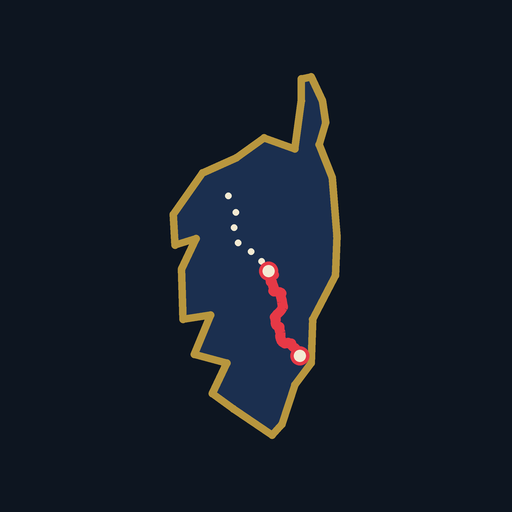

Cartes
Six cartes, chacune avec ses thèmes.
 TarentaiseLes Chapelles : itinéraire, avalanche, neige, soleil, météo
MaréesDe Bréhat au cap Fréhel : marée, estran, traversée, oiseaux
La RéunionLumière, versants, lever et coucher, drone
TarentaiseLes Chapelles : itinéraire, avalanche, neige, soleil, météo
MaréesDe Bréhat au cap Fréhel : marée, estran, traversée, oiseaux
La RéunionLumière, versants, lever et coucher, drone
 ChampignonsAutour d'Annecy : où chercher, pluie, forêts
ChampignonsAutour d'Annecy : où chercher, pluie, forêts
 VoileDe Cerbère à Menton et la Corse : vent, mer, fonds, ports, route, bateau
VoileDe Cerbère à Menton et la Corse : vent, mer, fonds, ports, route, bateau

CorseMes randos : tracés sur le relief, profil, pente, sol, survol